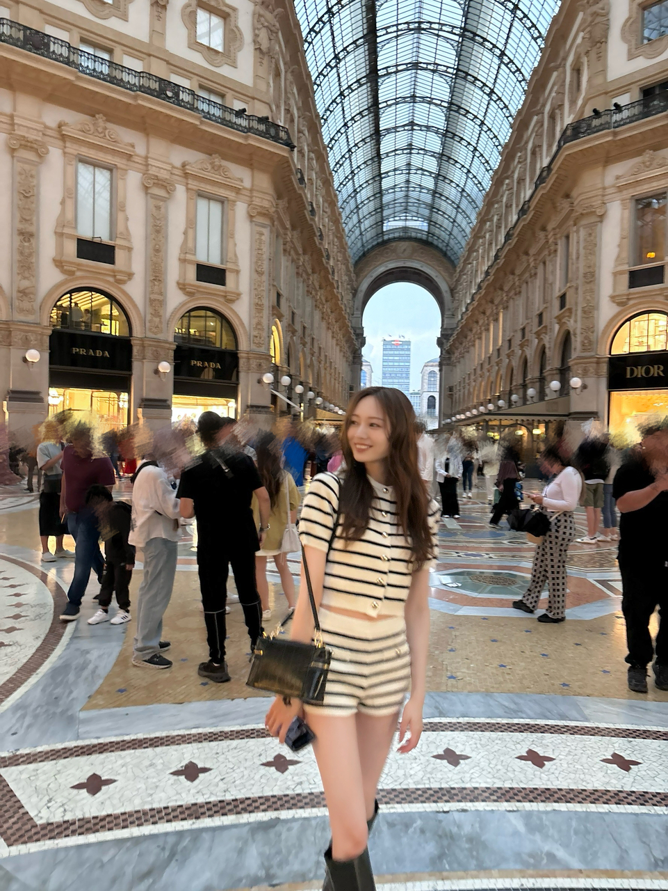
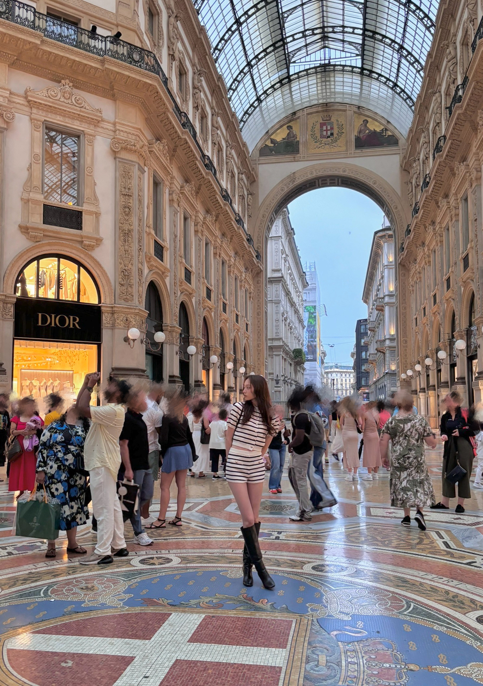

夢の近くに 触れたとき
みなさま こんにちは。
梅澤美波です。
お知らせがあります！
本日発表がありました通り、
2026年 2月3日に
梅澤美波 2nd写真集の発売が
決定いたしました！
1st写真集から、約5年ぶりになります。
月日が流れるのは
ほんとうにあっという間ですね、
ついこの間の事のようなのに。
1st写真集の撮影当時、私は21歳。
写真集が決まったその日にジムの契約を済ませ、
数ヶ月前からボディメイクをはじめ、
撮影１ヶ月前からは毎日ジムに通う日々でした。
朝8時から1時間トレーニングして
お仕事に行き、
一日の締めにまた1時間のトレーニング。
最初で最後だと思っていたので
出来ることは全て注ぎ込みました。
頑張りすぎなくらい、
頑張った思い出(^^)
今、当時の写真集を見返すと、
少しあどけない表情もあって
もっと素で笑えてたらいいのに〜と思うくらい
少し表情に固さもあるんだけど、
そんな姿さえお気に入りで。
1stが大満足で、やり切ったからこそ
もうこれ以上はないと思っていたし
これ以上は出せないと思っていたし
これで終わりだと思っていました。
でも、今の私なら
またこの５年での
この場所での経験を 、想いを乗せて
皆様へ届けることができるのではないかと思い
2nd写真集に向け準備を進めました。
撮影初日。ブレすぎだよ〜
結果、ものすごく
大満足の一冊に仕上がりそうです(^^)
頑張りすぎず、
ありのままの私でカメラの前に立ち続けました。
緊張なんてものはほぼ無く
ただただ楽しんで、その場のリアルな感情のまま
撮影に挑みました。
上がってきた写真を見返して、
私ってこんなに笑うんだ〜と 思ったり
ワインで顔赤くなりすぎだよ〜と思ったり
1stの写真と見比べて だいぶ大人になったなあと思ったり。
2nd写真集に映るわたしは
なんだか無邪気に、生き生きしています(^^)
それだけ、楽しかったんです〜〜
撮影地はイタリア！

私はファッションが大好きなので、
街そのものが
最先端のファッションを纏っているような
洗練されたミラノの街を 撮影地の舞台に選びました。
少し着飾ったドレスアップした私から
恥ずかしいくらいにナチュラルな私まで
色んな姿を楽しんでいただけると思います。
全国ツアーの合間にイタリアへ行ったのですが
夏のイタリアはとっても過ごしやすくて
街で出会う人は みーんな優しくて朗らかで
街の雰囲気も、どこか余裕があってまったりしていて
せかせかと心が急ぎがちな夏に
とても癒しをもらった時間でした。
イタリアでも、晴れ女大発揮でした！わーい
予約もスタートしております！
・Amazon（通常版）
https://x.gd/h3Sem
・セブンネット限定カバー版
https://x.gd/gpzmV
・Sony Music Shop限定カバー版
https://x.gd/08vXh
・楽天ブックス限定カバー版
https://x.gd/T9slQ
公式Xも、つくっていただきました！
◎2nd写真集 公式X
→
https://x.com/umeminami_2nd
いくつか上がっています(^^)
こちらフォローして
随時更新される情報追っていただけたら嬉しいです！
珍しくクリーム付けちゃったりして
わー、やっと言えました〜。
喜んでくれているかなあ。
年が明け、新年になり、
今年もよろしくお願いしますの想いも込めて
ひとつ、皆様へのプレゼントとして
受け取っていただけたらいいな(^^)

ご期待ください。
では。
また書きます！
Original：https://www.nogizaka46.com/s/n46/diary/detail/104148?ima=4930&cd=MEMBER